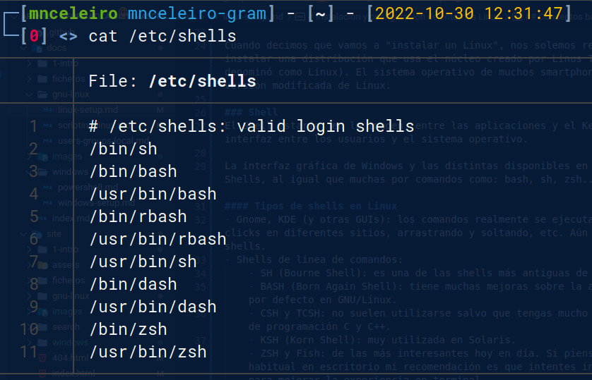
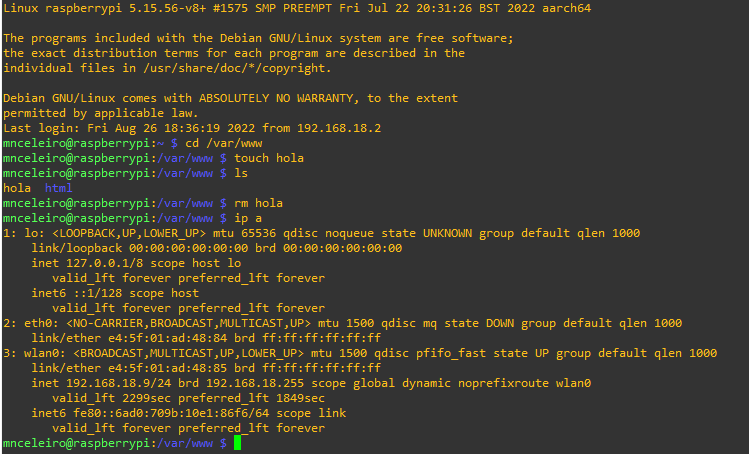

Instalación y configuración de entornos Linux
Conceptos básicos
Interfaces de usuario
Existen varios términos para describir interfaces gráficas:
- UI: User Interface (en español IU: Interfaz de Usuario). Lo que ves en tu ordenador ahora mismo se llama GUI (Interfaz gráfica de usuario o Graphical User Interface). Los terminales de comandos.
- GUI: Graphical User Interface o interfaz gráfica de usuario.
La diferencia es que la G (graphical) indica que es una interfaz en modo gráfico y no en modo texto. En sistemas basados en Linux existen diferentes interfaces gráficas: GNOME, KDE, XFCE, LXDE, Cinnamon, MATE...
Arquitectura del sistema
 |
|---|
| Imagen obtenida de: Wikipedia |
Kernel (núcleo)
Podemos imaginarnos el kernel como un programa en la parte más profunda del sistema operativo y que se ocupa de la interactuación con el hardware (procesador, disco duro, ram...).
Cuando desde un terminal ejecutamos un comando, el kernel lo recibe y se ocupa de interactuar con el hardware.
Aunque muchas veces trata a las distribuciones (Ubuntu, Fedora, Linux Mint, ArchLinux...) como "Linux" a secas, realmente Linux es el kernel o núcleo y todos esos nombres son distribuciones diferentes que usan ese kernel.
Cuando decimos que vamos a "instalar un Linux", nos solemos referir a que vamos a instalar una distribución que usa el núcleo creado por Linus Torvalds en 1991 (y al que denominó como Linux). El sistema operativo de muchos smartphones (Android) usa una versión modificada de Linux.
Shell
El Shell estaría, en la imagen, entre las aplicaciones y el Kernel. Un Shell hace de interfaz entre los usuarios y el sistema operativo.
La interfaz gráfica de Windows y las distintas disponibles en GNU/Linux son también Shells, al igual que muchas por comandos como: bash, sh, zsh...
Tipos de shells en Linux
- Gnome, KDE (y otras GUIs): los comandos realmente se ejecutan, pero se hace mediante clicks en diferentes sitios, arrastrando y soltando, etc. Aún así, estos son también shells.
- Shells de línea de comandos:
- SH (Bourne Shell): es una de las shells más antiguas de Linux.
- BASH (Born Again Shell): tiene muchas mejoras sobre la anterior y es la que viene por defecto en GNU/Linux.
- CSH y TCSH: no suelen utilizarse salvo que tengas mucho control sobre lenguajes de programación C y C++.
- KSH (Korn Shell): muy utilizada en Solaris.
- ZSH y Fish: de las más interesantes hoy en día. Si piensas usar Linux de forma habitual en escritorio mi recomendación es que intentes instalar una de estas dos para mejorar la experiencia en terminal.
Si consultas el fichero /etc/shells puedes ver la lista de shells que tienes instaladas en el sistema.

Aplicaciones
Una aplicación puede ejecutarse por interfaz gráfica, pero también por terminal de comandos.
Muchas aplicaciones gráficas lo que hacen realmente (al pulsar, por ejemplo, un botón) es ejecutar comandos en un shell concreto. Este shell, a su vez, interactúa con el Kernel que a su vez lo hace con el hardware. Así es como se produce toda la comunicación entre las capas.
Si ejecutamos, por ejemplo, una aplicación (imaginemos Steam), esa aplicación se ejecuta en un Shell, el cuál a su vez se comunica con el Kernel y este finalmente con el hardware. Hay una comunicación completa desde el usuario hasta el hardware.
Sistema operativo
La combinación del Kernel, el Shell y los programas a más bajo nivel es lo que forma el sistema operativo.
Terminal de comandos
Un terminal de comandos es una interfaz en modo texto usada para controlar un ordenador (ya sea Linux o Windows).
A continuación se muestra el ejemplo de un terminal de comandos en un sistema operativo basado en Linux (Raspbian): 
No te preocupes si lo que ves te resulta extraño ahora, ya que en pocos días entenderás perfectamente todo lo que aparece en esa imagen.
Comandos básicos de GNU/Linux
| Acción | Comando |
|---|---|
| Reiniciar ordenador | sudo reboot |
| Apagar ordenador | sudo shutdown -h now |
| Ver procesos | top htop ps ps -ef |
| Probar conexión y latencia | ping www.google.com ping 151.101.133.50 |
| Ver información de red | ip address |
| Mostrar mensaje por pantalla | echo "mensaje". Por ejemplo: echo "Hola mundo" echo "Estoy ejecutándome en el SHELL: $0." |
Comandos de carpetas y ficheros
La raíz de todas las carpetas (también llamadas directorios) se denomina en Windows como C:. En GNU/Linux, en cambio, la raíz de todo es “/”. Un usuario se sitúa en Windows y GNU/Linux en las siguientes carpetas:
- Windows 10: C:/Usuarios/nombreUsuario/
- GNU/Linux: /home/nombreUsuario/
| Acción | Comando | Ejemplo |
|---|---|---|
| Ver dónde estás | pwd | pwd |
| Listar ficheros | ls -l ls -la ls -lh |
ls (muestra ficheros, pero no los ocultos) ls -l (muestra ficheros e información) ls -a (muestra ficheros, incluídos los ocultos) ls -lh (muestra información y "h" de human readable) |
| Moverse entre carpetas | cd ruta_carpeta | Si estoy en /home/mnceleiro puedo moverme a "Documentos" de dos formas: Ruta absoluta (pongo la ruta completa) cd /home/mnceleiro/Documentos Ruta relativa (pongo solo desde donde estoy) cd Documentos Para volver atrás (.. representa la carpeta superior) cd .. |
| Crear carpeta | mkdir nombre_carpeta | mkdir clase |
| Crear fichero vacío | touch nombre_fichero | touch datos.txt |
| Eliminar algo | rm nombre_carpeta rm nombre_fichero |
rm partidos rm -r MisFotos Si hay cosas dentro de una carpeta y queremos que borre la carpeta con todo el contenido de dentro hay que usar la opción -r . |
| Mover carpeta | Mover un fichero: mv origen destino Mover carpeta con cosas: mv -R origen destino |
Mover usando rutas absolutas (ruta completa) mv /home/mnceleiro/downloads/datos.txt /home/mnceleiro/documents/datos.txt Mover usando rutas relativas (relativo al directorio donde te encuentras) mv datos.txt ../documents.datos.txt Si usas la opción -R puedes mover una carpeta y todo lo que tiene dentro. |
| Cambiar nombre a algo | mv nombre_antiguo nombre_nuevo | mv datos.txt ../documents/datoscopia.txt También puede usarse para mover y con -R |
| Ver contenido de un fichero | cat cat -l |
cat /etc/shells (el archivo shells tiene una lista con los shells instalados en el sistema) cat /etc/passwd (en este fichero se almacenan los datos de los usuarios del sistema) |
Instalación de software
Existen distintas tiendas de aplicaciones según la distribución GNU/Linux usada así como gestores de paquetes. El gestor de paquetes más conocido se llama APT y es usado en distribuciones basadas en Debian, por ejemplo: Ubuntu, Linux Mint, Zorin OS, Steam OS.
Los comandos más interesantes a usar con la herramienta APT son los siguientes:
| Acción | Comando | Ejemplo |
|---|---|---|
| Instalar | apt install programa | sudo apt install kdenlive Para instalar sin que pida confirmación: sudo apt install -y libreoffice |
| Eliminar | apt remove programa | sudo apt remove gimp |
| Actualizar | apt update apt upgrade |
sudo apt update sudo apt upgrade |
Es importante tener en cuenta que apt no es el único gestor de software disponible. Aunque apt es probablemente la mejor forma de instalar cosas, a veces hay aplicaciones que no se encuentran aquí. Si no encuentras la aplicación en apt podrías buscar la aplicación en internet y descargarla desde la página oficial (tal y como harías en Windows) o incluso buscar en internet algún tutorial de como hacerlo, por ejemplo:
Te recomiendo hacerlo filtrando por "último año" o por la versión de Linux que tengas. Por ejemplo: "Instalar Spotify en Ubuntu 20.04".
Gestión de procesos
| Acción | Comando | Descripción/Ejemplos |
|---|---|---|
| Ver procesos | top htop ps -ef |
top y htop son interactivos (htop requiere instalación). Ejemplo de ps: ps -ef | grep firefox (filtra procesos con nombre firefox mediante grep) |
| Ver procesos (en forma de árbol) | pstree | ps + tree |
| Matar procesos (por código) | kill [-código] |
Supongamos que queremos matar firefox (hay que mirar cuál es su ID de PROCESO, puedes hacerlo usando htop o ps):ps -e \| grep firefoxMatar un proceso de forma normal (por defecto usa código 15): kill 12345Matar un proceso de manera forzada (p. ej: si se queda trabado). Para matar de forma forzada el código es el 9: kill -9 12345 |
| Matar procesos (por nombre) | killall [-código] |
killall firefoxMatar el proceso (forzandolo): killall -9 firefox |
Puedes consultar más información sobre como matar procesos y códigos de proceso aquí.
Referencias:
- Imran Afzal. Complete Linux Bash Shell Scripting with Real Life Examples. Udemy. Disponible en: https://www.udemy.com/course/linux-bash-shell-scripting-through-real-life-examples/